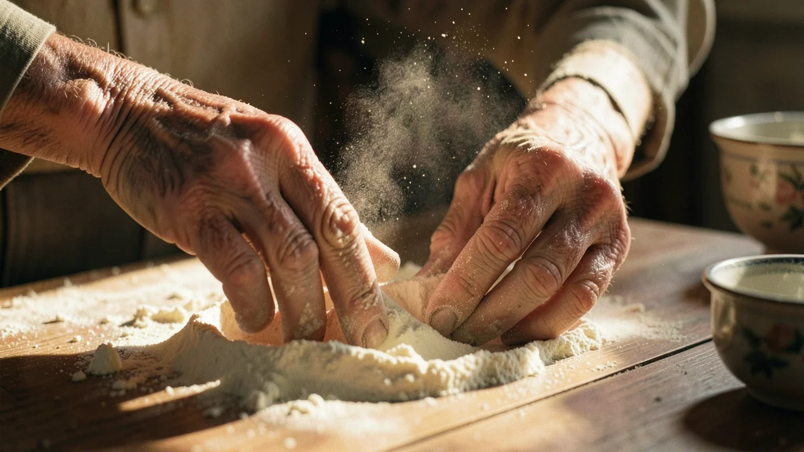
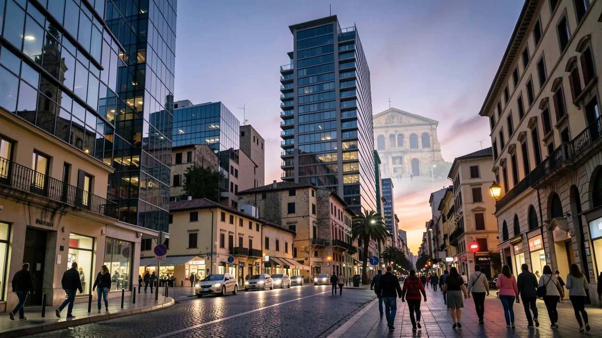

La diaspora italiana e il fantasma de «La Dolce Vita»
Generato con IA: testi, immagini e altri contenuti di questa pagina sono stati creati con l'intelligenza artificiale e possono contenere errori.
Dietro ogni delizioso sugo per la pasta preparato in una cucina di periferia si cela un profondo e inestinguibile desiderio di un luogo che forse non esiste più.

- La diaspora italiana usa il cibo e le tradizioni per colmare la distanza tra passato e presente.
- La nostalgia è uno strumento per preservare la propria identità in un mondo che cambia.
- L’idea del «ritorno» riguarda spesso più il conforto psicologico che un viaggio vero e proprio.
Un uomo anziano nel New Jersey piega con attenzione un foglio di carta su cui è scritta la ricetta del ragù; le sue mani tremano leggermente, rendendo il compito più difficile. Non si limita a preparare la cena, ma compie un vero e proprio rito di risurrezione. Per milioni di italiani che vivono all’estero, il cibo non è solo nutrimento, ma un modo per evocare i ricordi di un paese che forse hanno lasciato cinquant’anni fa, o forse un paese che hanno lasciato i loro nonni, e che conoscono solo attraverso vecchie foto e film in bianco e nero.

Il mito dell’eterno ritorno
In filosofia esiste un concetto chiamato «eterno ritorno», l’idea che tutto ciò che accade si ripeterà ancora e ancora, per sempre. Sebbene Nietzsche lo abbia utilizzato per suscitare una sorta di crisi esistenziale, la diaspora italiana lo utilizza per mantenere un legame con un passato perduto. È la convinzione che, replicando esattamente la quantità di aglio, usando il tipo di farina corretto e ascoltando l’opera giusta, si possa rivivere, anche solo per un breve periodo, una versione dell’Italia che rimane perennemente «splendente».
È un pensiero affascinante, ma è anche un po’ un’illusione. Ci piace fingere che la «patria» sia un paradiso statico, baciato dal sole, dove si pranza lentamente e non esiste la burocrazia. In realtà, l’Italia che si cerca di raggiungere è spesso un manufatto museale, una versione del paese pesantemente rimaneggiata dalla memoria nostalgica e dal cinema. Non desideriamo semplicemente un luogo; desideriamo un’epoca che, probabilmente, era molto più afflitta dal colera e molto meno connessa di quanto vorremmo ammettere.
L’architettura della nostalgia
In che modo si manifesta concretamente questa nostalgia? Non si tratta semplicemente di una vaga tristezza, ma di una componente attiva e strutturale del modo in cui queste comunità costruiscono la propria esistenza. Si manifesta nell’organizzazione dei quartieri, nel modo in cui vengono celebrate le festività e persino nel modo in cui le persone esprimono il loro dolore. È un modo per colmare il divario tra il «qui» (di solito una metropoli moderna e caotica) e il «là» (una collina tranquilla, legata alle proprie origini).
Per la diaspora, i rituali culturali fungono da ponte psicologico tra la terra natia perduta e una nuova realtà, spesso incerta.
Questo sentimento di «nostalgia» funge da collante culturale, ma crea anche una particolare condizione di «essere sospesi» tra due mondi. Non si è pienamente parte del nuovo paese, perché si è troppo impegnati a guardare al passato, e non si è parte del paese d’origine, perché, beh, non ci si trova più. È un po’ come essere bloccati in una sala d’attesa aeroportuale: un ambiente confortevole, ma non si è mai veramente a casa.

Perché tutto questo è davvero importante (e non riguarda solo la carbonara)
Potreste pensare: «Non mi piacciono nemmeno le olive, perché dovrei interessarmi alla nostalgia italiana?». Perché non si tratta solo dell'Italia. È il modello di come si preserva l’identità culturale in un mondo globalizzato. Ogni gruppo di migranti – che si tratti di persone in fuga da conflitti o semplicemente alla ricerca di un lavoro meglio retribuito – utilizza gli stessi meccanismi, basati su «cibo, immaginazione e ricordi», per evitare che la propria identità si dissolva nella cultura locale.
Quando parliamo dei meccanismi della diaspora, parliamo di come gli esseri umani utilizzano la memoria per affrontare situazioni di sradicamento e sopravvivere. È una strategia di sopravvivenza che permette alle persone di portare con sé il proprio «luogo d’origine», anche quando la casa fisica non esiste più o è cambiata radicalmente.
Una realtà agrodolce
Quindi, il sogno della «Dolce Vita» è una menzogna? Non proprio. È una finzione utile. Fornisce significato, senso di comunità e un modo molto piacevole per trascorrere un pomeriggio di domenica. Ma dobbiamo riconoscere che il concetto di «eterno ritorno» è un tentativo di fermare il tempo. La vera Italia sta andando avanti, evolvendosi e affrontando le proprie sfide moderne, proprio come tutti gli altri.
Possiamo goderci il rituale della preparazione di una ricetta e il calore della comunità senza fingere che il passato sia un capolavoro immutabile. Dopotutto, se il passato fosse veramente perfetto, non ci interesserebbe mai costruire qualcosa di nuovo.
Qual è il «luogo d’origine» che persiste nella storia della vostra famiglia? È un luogo, un sapore o semplicemente un sentimento che non riuscite a definire con precisione?